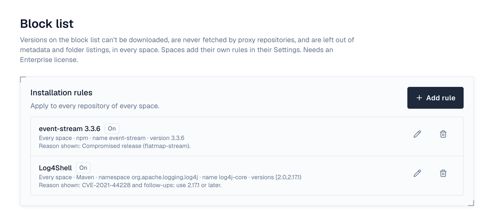

1. Overview
Versions on the block list can't be used: downloads and uploads answer 403 with the reason blocked and the rule's reason, proxy repositories never fetch them, and they're left out of the version lists clients resolve from and of folder listings, so builds pick another version. People who browse a repository still see them, with a Blocked badge in the Versions tab. Rules apply at once to versions already stored, too. Needs an Enterprise license.
- Space rules are in the space's Settings under Block list (maintainers and owners); a rule can be narrowed to one repository.
- Installation rules are under Settings → Repositories → Block list (super admins), for every repository of every space.
- From quarantine: blocking a quarantined version (Block, or Delete and block) adds a rule here, marked From quarantine, with where the version came from and whether it was deleted. Deleting such a rule unblocks the version: a version that was kept goes back to quarantine.
2. Rules

| Setting | Meaning |
|---|---|
| Formats | Which formats; none ticked means all. |
| Namespace, Name | Patterns; * matches anything, ? one character, case doesn't matter. Fill in at least one. A Maven name is groupId:artifactId, an npm name may have its @scope, a Go name is the module path, a Helm name the chart, a NuGet name the package ID, and a raw file's name is its path (so tools/*.exe). |
| Version pattern | A pattern such as *-SNAPSHOT; empty matches every version. |
| Version range | Maven style: [1.0,2.0) is 1.0 up to but not including 2.0, (,1.2] up to 1.2, [2.0,) from 2.0, [1.4] exactly 1.4; join several with commas. For example org.apache.logging.log4j:log4j-core with [2.0,2.15.0) blocks the Log4Shell versions. Python-style specifiers work too: >=2.0,<2.3, ==1.4.*, ~=3.1. Versions compare the way their format orders them: for PyPI as pip does (1.0.post1 after 1.0, 1.1.dev0 before 1.1); for npm, Go and Helm by semver (Go and Helm with or without the leading v); for NuGet as NuGet does (up to four numbers, 1.0 is 1.0.0); for conda as conda does (1.1dev1, 1.1_, 1.1a1, 1.1, 1.1post1 in that order). Python-style specifiers compare as pip does whatever the format, and many conda versions aren't Python versions (1.1.1w, 9e, 1.1_) and never match one, so give conda versions as a Maven-style range. PyPI names match however they are written (Foo_Bar is foo-bar), and NuGet IDs in any case. |
| Reason | Shown to anyone whose download is refused. |
Try a version in the space's Block list shows which rule, if any, would block a name and version in one of its repositories.
3. What is refused
- Downloads, HEAD requests and checksum files of the version's files.
- Uploads of the version, to any repository the rule covers, and storing a copy a proxy fetched.
- Rules made from quarantine also refuse their files' content under any other name or version: a file with the same SHA-256 can't be uploaded or cached (the error says checksum). Checksum files and files under 128 bytes aren't compared.
- Proxy repositories don't fetch a blocked version and don't serve a copy they cached before.
- Maven: blocked versions are left out of maven-metadata.xml, both what hosted repositories generate and what proxies pass on from their upstream (whose checksum files then match what is served). A blocked snapshot's own metadata is refused.
- npm: blocked versions are left out of package documents (dist-tags move to the newest version left), and npm audit reports them as critical advisories.
- Docker: blocked tags are left out of tag lists, and pulling them (or their digest) is refused.
- Raw: blocked files are left out of folder listings.
- Another Depotex linked to the repository (Depotex link) is refused them too, and removes copies it cached.
A change applies at once on the server you made it on, and to downloads on other servers of a cluster within a few seconds (BLOCKLIST_REFRESH_INTERVAL, 5s by default). Uploads and proxy caching check for changes every time.
4. Without Enterprise
Rules can't be added or changed, but existing rules keep applying, and you can delete them.
5. Events
artifact.blocked (after) is raised when a request is refused, at most once per version and server every 10 minutes (BLOCKLIST_EVENT_INTERVAL), so automation can tell you a build is still asking for a blocked version. blocklist.rule.create, .update and .delete wrap rule changes (before and after; a failing policy or plugin refuses the change). Rule changes are recorded in the audit log. See Events.
6. Permissions
| Permission | Who | Allows |
|---|---|---|
| spaces:blocklist:manage | Space maintainers and owners | The space's block list and its dry run |
| artifacts:blocklist:manage | Super admins only | Settings → Repositories → Block list: the installation rules |
| repo:quarantine | Repository admins | Blocking the repository's quarantined versions in that repository, and deleting those rules |